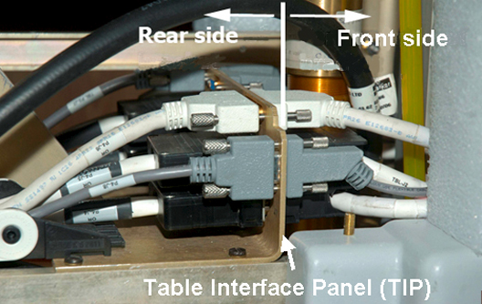
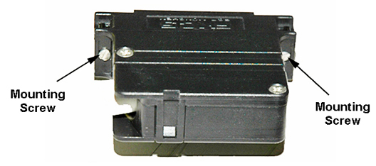

Illustration 3: Front Side Cable Connections

| NOTE: | Use small and medium size standard head screwdrivers to
remove the cable connector screws. CAUTION: Be careful with the large black cable connectors. There are small mounting screws and they can be easily stripped. (See Illustration 4.) |
Illustration 4: Black Cable Connector
